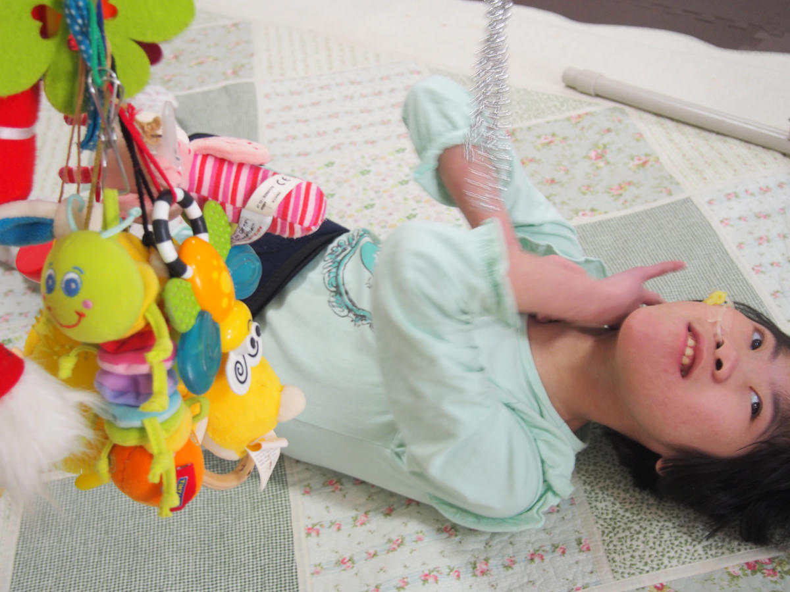
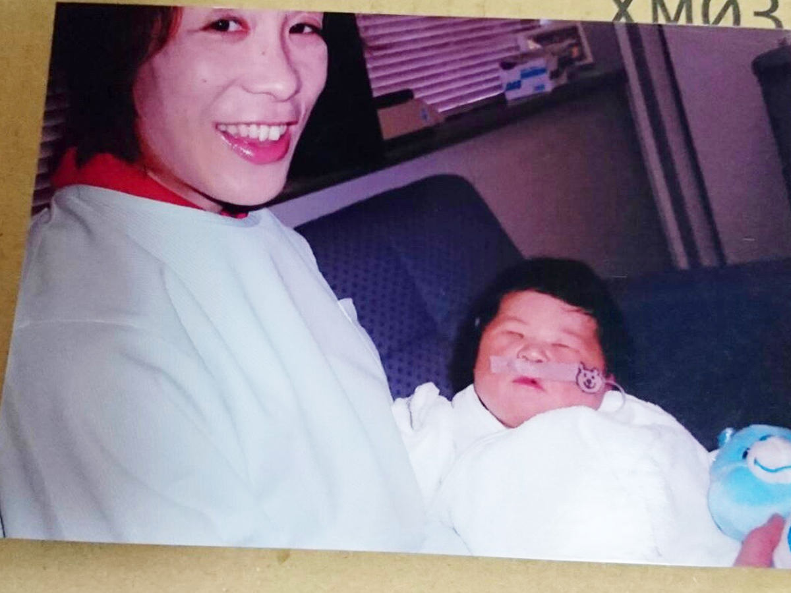
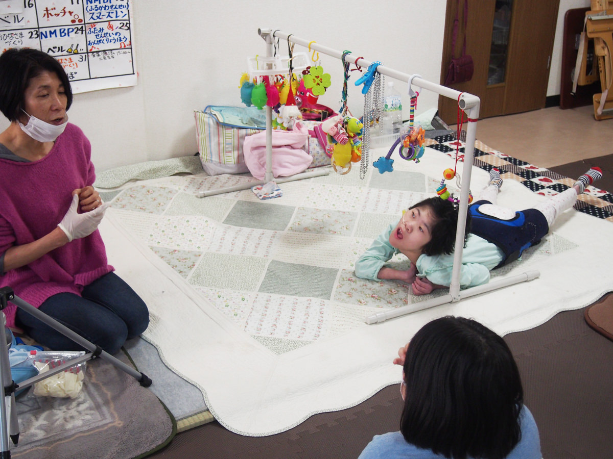
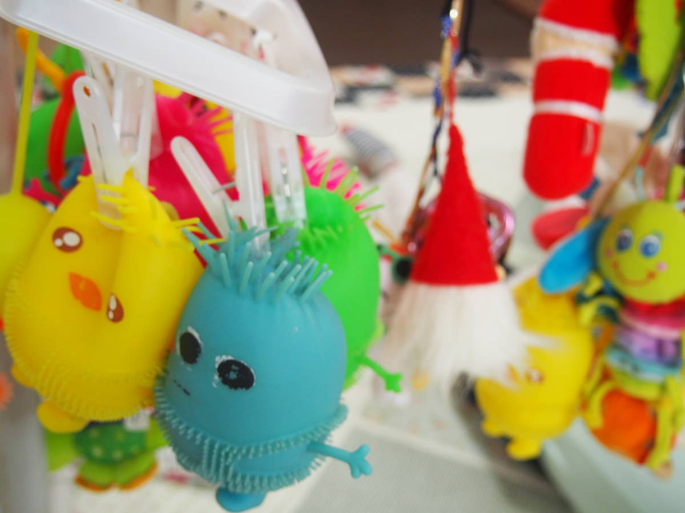
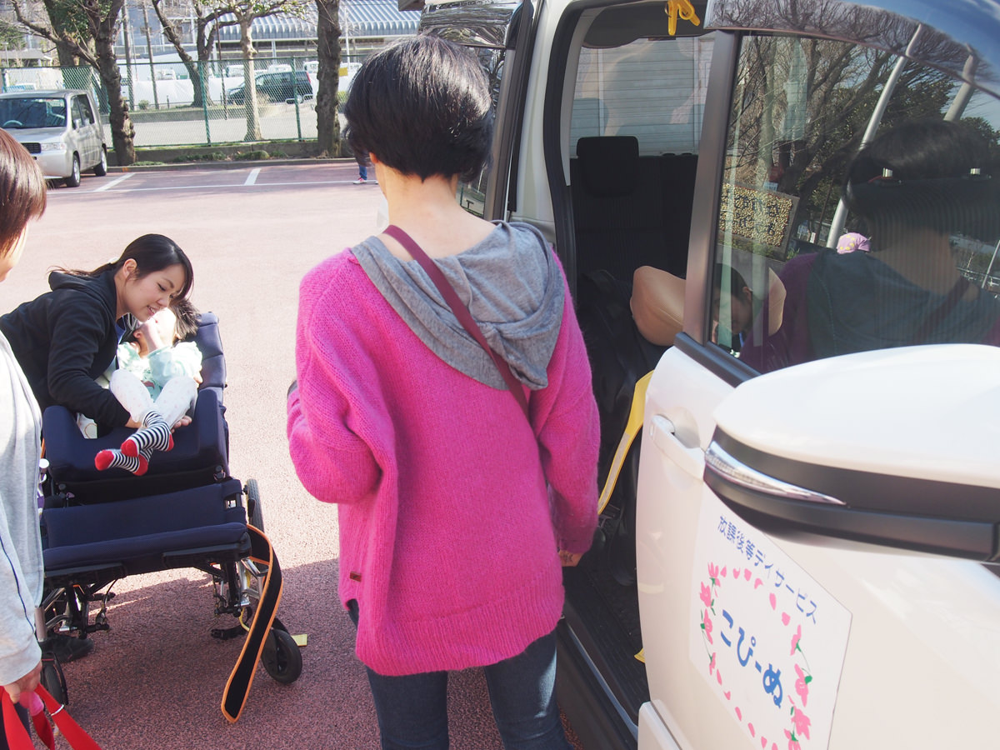
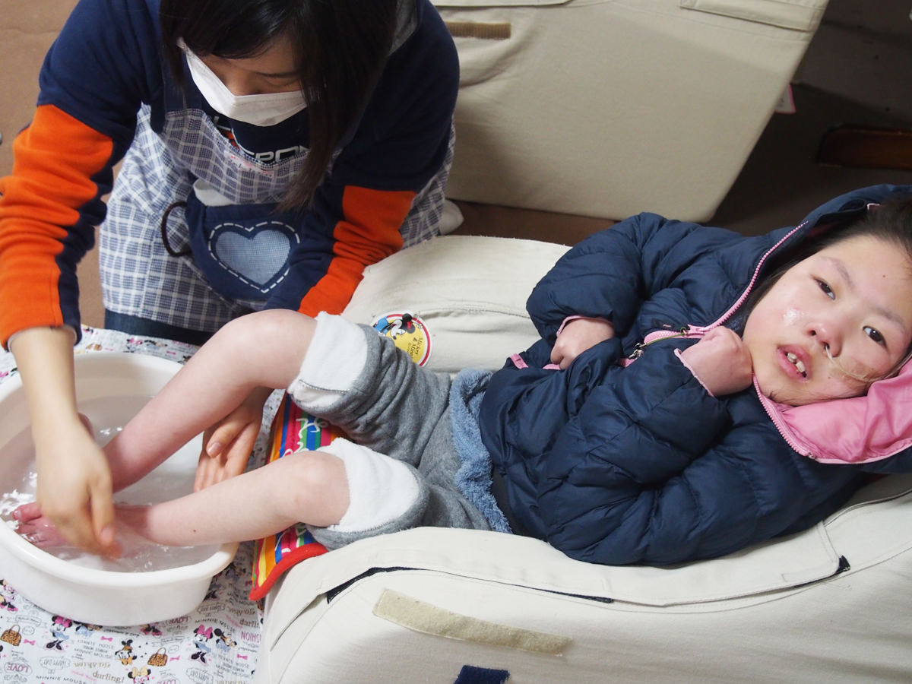
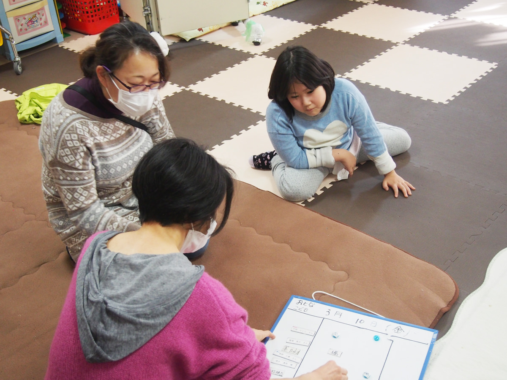
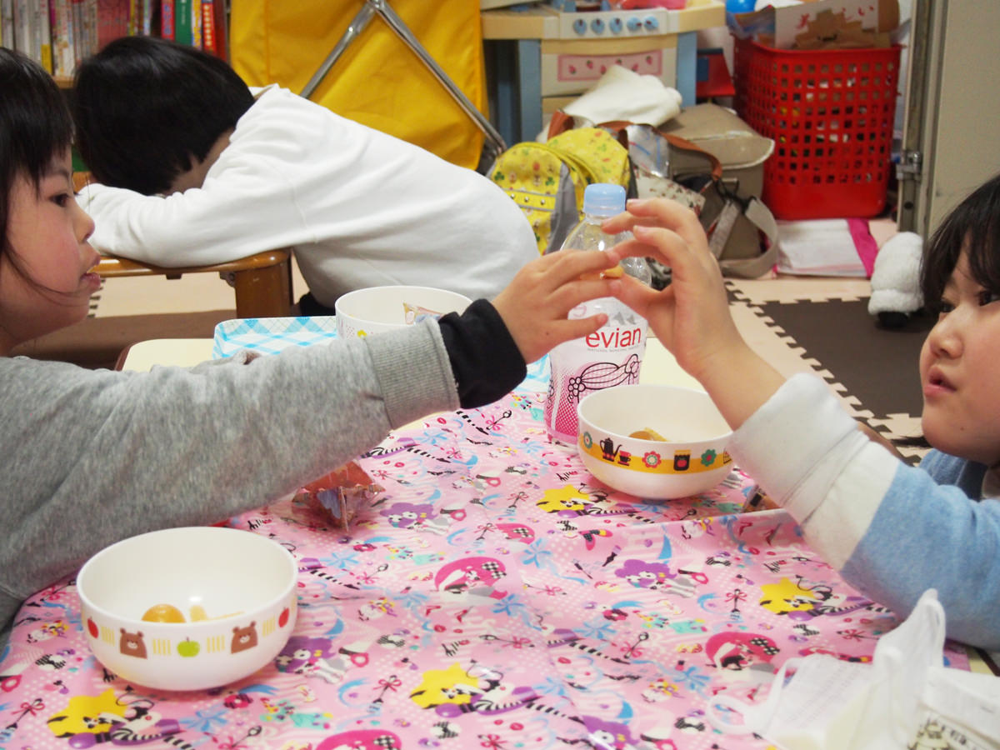
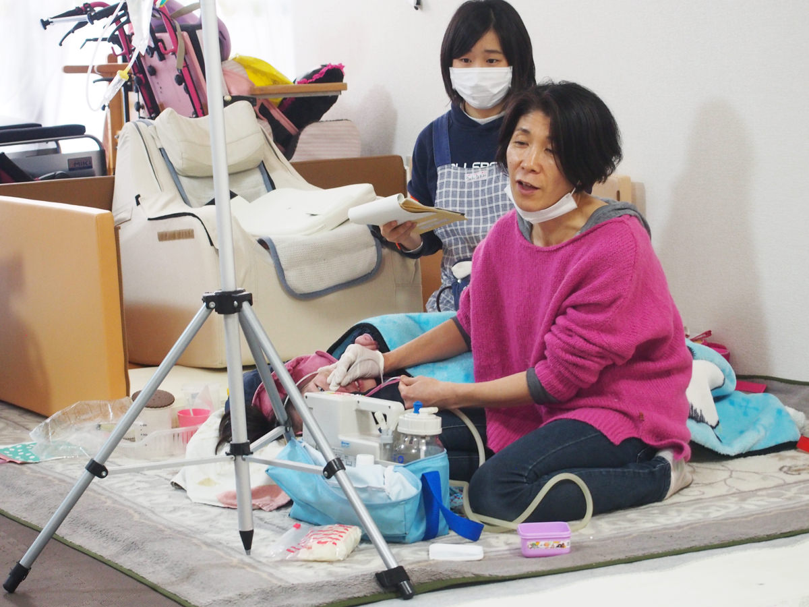

話すのも笑うのも嫌だった子ども時代
こぴーぬ反町ルームを立ち上げる際、「政治家になれそうだね」と言われたこともあったそうですが、子どもの頃から活発でしたか？
平間昔は、ほとんどしゃべらない子どもだったんです。母が再婚をしていて、転校を何度もしました。苗字も何回も変わって、それで学校でいじめられたこともあって、話したくもないし笑うことも嫌でした。継父と折り合いが悪くて、家にもいたくなかったです。それで「早く自立したい」って、そればかり考えていました。
今の平間さんと、全然違いますね。
平間今は本当に「気をつけた方がいいよ」と言われるくらい警戒心がなくて、とにかく人が大好きなんですけど、これが本来の自分だと思っています。
当時から走ることは得意で褒められて、自信にもなって、高校のときにははじけましたね。それから看護学校に通ったんですが、寮の先輩がものすごく厳しかったので、自分の意見を伝えないと専門職としてやっていけないということがわかってきて。

「できない」と思ったときは「これはできない」ときちんと言える看護師になりなさいと教えられて、かなり鍛えられました。自分の身も患者さんの身も、どちらも守るのが看護師だと教わったんです。
そして1番は、さっちゃんが生まれてからです。さっちゃんは、私が言わないと何も言えないんです。病院へ行くと子どもが見てきて、それだけならいいんだけれど、そのお母さんが「見ちゃいけません！」と言ったり。お医者さんもさっちゃんの口の中をみて看護師さんを呼んで「ほら、これが口蓋裂だよ」と見せたり……さっちゃんの学校にも、ケアの方法などをきちんと伝えないといけないですし。
独身貴族でした（笑）
看護師のお仕事が大好きだったそうですが、看護師になるきっかけは何でしたか？
平間母がすごく苦労をしていたんです。昼は工場、夜は水商売みたいな感じで。それで再婚したんですが、よく「お父さんに食べさせてもらってる」と言っていて、それがすごく嫌だったんです。再婚してもあまり幸せそうじゃない母を見ていて、それで結婚願望も全然なかったです。自分はちゃんと稼ぎたい、いざというとき離婚できるくらい自立していたい、という気持ちが育っていましたね。
仲良くしてくれていた叔父の友人も看護師資格を取って自立している姿に憧れていました。「高校出たら看護師になろう」と働きながらそのお金で資格を取れるということで准看護師の学校に行きました。
結婚願望は全然なかったんですね。
平間無かったですね（笑）独身貴族で、35歳くらいまでは遊びまくっていました！バイクも乗るし、サーフィンも好きで。
ただ准看として働いていると意見が通らない状況があって、やっぱり正看護師の資格を取らないと、と感じました。全日制の学校に通って35歳のときに資格をとって、その頃ですね「子どもを育ててみないと」って思ったんです。
継父が短気で母にすぐ手をあげる人で、再婚なのにとても苦労していました。とにかく全然違う人がいいと思っていました。
障害の子が生まれるなんて考えてもいなかった
さくらちゃんが生まれたときのことを教えてください。
平間結婚してすぐ、計画的に。38歳で妊娠して、出産したのは39歳のときです。
なかなか出てこなくて、予定日を過ぎて1ヶ月もお腹の中にいました。最終的に帝王切開で。さくらは黄疸があって、クリニックには小児科医が不在で転院することになりました。神奈川県立こども医療センターがいっぱいだったので、横浜市立大学附属 市民総合医療センターに転院しました。

出産してすぐに障害がわかったんですね。
平間障害の子が生まれるなんて考えてもいなかったので、悲しくて悲しくて泣いてばかりいました。そんなとき、看護師さんから「あなたね、高齢で産んでね、覚悟して産んだんでしょ」って言われたんですよ。それを聞いて「え？なんの覚悟？」と思ったんですよ。同じ看護師としてどうなのって。そういう言葉って。それも悲しくて。可愛いとも思えなかったし、親も呼ぶことができなかったですよ。そんなときに主人に「じゃあどうするの？施設に預けるの？」と言われて、「育てなきゃ」と思いました。
さくらちゃんの名前の由来は？
平間生まれる前からすごくいろんなことを考えましたね。桜はあんなにみんなに愛されて、太い木だから。力強く生きて欲しいという気持ちを込めてつけました。
その通りになりましたね。
平間そうですね～。

看護師さんというお仕事柄、障害のお子さんは身近でしたか？
平間全然無いです。本当に、その立場にならなきゃなんにもわからない人なんです、私。妊娠する前は妊婦さんのことなんて全然わからないくらい冷たい人だったし、障害の子どもをもってからですね、障害について思い知ったのは。
障害の子どもをもつことで、人の目が気になることはありましたか？
平間病院のキッズコーナーで休んでいたら、女性から「こういう子を産まないために、今検査してます」とさっちゃんの目の前で言われたときは、本当に悔しくて、世の中全体がこうなんだなと思いました。うちの子が理解できると思ったら、本人の前でそんなこと言わないですよ。
病院へ行くとジロジロ見られるし、嫌でしたね。マンションのエレベーターでも、おばあさんがさっちゃんを見て、「かわいそうね」と言うんですよ。何にもかわいそうじゃないんですけど。
逆に、周りからの反応という点で、嬉しかったことはありますか？
平間朝さっちゃんとマンションのエレベーターに乗っていたら、ある男性が「あ、おはよう！これから学校？」とさっちゃんに話しかけてくれたんです。さっちゃんは返事はできないんですけど、「気をつけてね！」とすごく普通に声をかけてくれて。私とっても嬉しくて、涙がポロポロ出ました。
普通に接してくれるのが1番嬉しいということですね。
平間そうですね、普通の子なので。見学に来て、いきなり手を触ったりする方が特に高齢者の方に多いんですけど、私は「やめて」って言っちゃいますね。普通の小学生に、「おはよう」って挨拶しますよね。中学生の女の子は中学生なんです。赤ちゃんじゃないんですよ。
私もつい可愛くてベタベタしてしまうんですけど、娘も中学生なので「やめてー」ってやります。ただやっぱりちょっと手は貸して欲しかったりする。
うちの子たちは言えないけれど、見てます。感じています。受け手が把握していないだけで、本当は伝えているんです。わかろうという優しい気持ちがあれば、関われると思う。でも待っていたらわかってはもらえないから、どんどん地域に出て行って、自分が死んだときに少しでも可愛がってもらえるように努力していきたいと思います。

子育てでつらかったことを教えてください。
平間私、この子を産んだときに、もう2度と働けないと思ったんです。もう人生ダメだって思いました。ずっと看護師の仕事が好きで、働き続けるつもりで駅の近くにマンションも買ったのに、「なんのために？！」って。
ところが年々楽になっていくんです。これは働けるんじゃないか、と思って仕事を探しはじめました。当時は週に1日だけデイサービスに預けて、その日だけは15時半まで働けましたが、その日以外は14時くらいまでです。
看護師だからまだ仕事はありましたけど、普通の仕事だと無理だと思いますね。それでも知人に紹介してもらって、きちんと事情を説明して働いていたクリニックをクビになってしまったんです。「思った以上に休まれる」って。
あと小学校が近いのでよく前を通るんですけど、健常の子どもを見ると、今でもつらいですね。見ないようにしたり、子どもがさっちゃんをじっと見ていると「あっち行きなよ」とか言っちゃいます。「もしかしたらさっちゃんも走っていたかもしれない」とやっぱり思ってしまうので。
逆に嬉しかったことは？
平間「本当にさっちゃん可愛いな」と思えたときですね。前は全然、笑わないし泣かない子だったんですが、手術をして寝返りもできるようになって、大きな声で泣いたりゲラゲラ笑うようになったとき、嬉しかったですね。「こんなに大きく泣けるようになったね」って。
普段もオムツを替えると、にこっとして、それで私嬉しかったり楽しかったりするんです。もし子どもがいなかったとしたら、そういうのも無いから。それを知ったときに、「本当にありがとうね」と。
さくらちゃんの好きなものはなんですか？
平間赤ちゃんの頃は、白と黒のペンギンのぬいぐるみをずっと気に入っていました。おもちゃのメリーを見ていて、イノシシに反応していたり。茶色が気になったみたいですね。今は光るものとか、揺れるおもちゃが好きです。
あとさっちゃんは人が好きですね。人の受け入れが得意なので、学校でも新任の先生の練習台（笑）としても頼りにされているみたいです。

2人目のお子さんを考えたことは？
平間健常の子どもも欲しくて、不妊治療して体外受精もしたんですけど、もうできないということがわかりました。これは「次の道に進め」って言われているんだと思って。
「いつか自分は何かをやるんだ」と思っていました
こぴーぬ反町ルームを立ち上げたきっかけを教えてください。
平間さっちゃんの子育てですごく苦労したので「いつか自分は何かをやるんだ」と少しずつ考えはじめました。いつも周りにそんな話をしてたんです私。そんなことを考えはじめたのはさっちゃんが小学校に入学し、落ち着いてきた頃ですね。友人の知り合いで放課後デイサービスをつくった人がいたので、直接、話を聞いて「これなら自分にもできるかも」と思いました。
それから「一緒にやる」と言ってくれた友人がいたことが大きいです。資金も無かったですし、場所もなかなか見つからなくて、一つひとつ大変でした。人につないでもらって、助けてもらってなんとかできた感じです。それは今でも続いていますね。
旦那さんはどんな反応でしたか？
平間好意的な感じでしたね。主人には「私が死んだらどうするの？」と常々と言っていて、本人も「いずれは自分もそっち方面に」とか「ヘルパーはどうやって取るんだろう」「俺を雇ってくれる？」と言ったり。ただ主人は腰が悪いし、気が利かないので……。
今、私が仕事でやむを得ない場合は主人に仕事を休んでもらっています。ドライバーがいないときには、送迎を手伝ってもらったり。主人は自営なのであまり休ませたくはないんですけど、協力してもらっています。

ワクワク感や達成感を子どもたちに体験してほしい
こぴーぬの活動について教えてください。
平間まずは「今日はこぴーぬに行く日だ、やったー！」という行くのが楽しみになる居場所を目指しています。そして「預かる場所」ではなく「育てる場所」なので、こぴーぬに来ている子どもたちにとっての勉強をしています。
たとえば、手が健常児のようにうまく動かせない子は「腕はそういうもの」と思ってしまっているので、新しい運動基礎プログラム（NMBP）で「こんなに腕は伸ばせるんだよ！」って、自分の体の使い方を自分で知ってもらう。
体を動かしていない子が多いので、動かすと循環が良くなって、ポカポカしてるし、腸の動きも良くなるんです。はじめてやる子は寝ちゃいますね。
あと部屋を薄暗くして『光・音楽・匂い・触って面白いもの』を使って心地よくなるワーク（スヌーズレン）や、音楽療法士の方に来てもらったり、入浴剤やハンドクリームを作ったり、お菓子作りなどをしています。

ベルの音楽はすごく人気です。今度、何年かかってもいいので、1人ずつ自分の音を覚えてもらって、みんなの大好きな『となりのトトロ』を演奏したいと思っています！以前『キラキラ星』をやったんですが、全盲の男の子も自分の番に2回ちゃんと鳴らすんですよ！自分の番が来るというワクワク感だったり、「できた」っていう達成感であったりを、体験してほしいなと思っています。
普段そういったプログラムをしているんですけど、はじめにお母さんと相談して、その子に合った目標を立てています。うちの子の場合は「好きなことが増えて、楽しいことや興味が広がること」「思いを多くの人に伝えること」。
たとえばトイレのタイミングを、表情や声や動きで伝えてくるのですが、これを親だけではなく他の人にもわかってもらえたら言われた方も嬉しいし、親も助かる。将来的に施設に入ったときにも、本人が助かる。それが、この子たちにとっての自立なんです。
健康面の目標では、体調の安定を促すことですね。すごく風邪をひきやすいので緑茶の殺菌効果のあるマウスケアをしたり、過敏症もとっていきたいのでマウスケアは力を入れているところです。うがいひとつとっても、人によってできるやり方が違うので、その子に合ったケアをすることはとても大事にしています。
重度の障害をもったお子さんのご両親からも、私が看護師ということで信頼していただいているところもありますね。ご両親にとっても安心できる場所として、心のレスパイトになりたいですし、こぴーぬに預けていることでホッとお茶を飲めたり、そういうのを大切にしていきたいと思っています。
こぴーぬを立ち上げて嬉しかったことを教えてください。
平間「子どもが楽しそうになった」「働けるようになった」と言うお母さんの声は本当に嬉しいです。ある男の子が、こぴーぬに来る前は外出全般を嫌がっていたのが、通い出してからは「こぴーぬに行くんだ」ってことがわかるとにっこり笑うそうなんです。全盲なのですが、私の声を聞くとにこにこしてくれて、可愛いですよ。
さっちゃんも、ワサワサしている場所が好きみたいで、落ち着いていますね。元々マイペースみたいなんですけど。

18歳以上になると、行くところがない
今後の課題を教えてください。
平間今放課後等デイサービスは増えてきているのですが、18歳以上になると行くところがありません。学校もないし、働けないし、放課後等デイサービスも使えない。家にいるしかないんです。今後は18歳以上の障害者のための居場所づくりをしていきたいです。
そのためにも、こぴーぬで私がいなくてもやっていけるよう人を育てていきたいと考えています。
元々送迎のドライバーも看護士もずっと足りない状況なんですが、最近放課後等デイサービスの開設要件が変更になって、「スタッフの半分は保育士でなければならない」と決まりました。横浜市は普通の保育園でさえ保育士が足りていない状況で、障害児の施設にはなかなか来てくれません！
つくったはいいものの続けなければ意味がないので、とりあえず中のスタッフに保育士資格を取ってもらうことを考えています。
他にも、地域の方に子どもたちのことをもっと知ってもらうため、バザーに参加したり、写真でこぴーぬの様子を伝えたりしてきました。今後も積極的に地域との関わりを深めていきたいと考えています。
最後に後輩のご家族に伝えたいことを教えてください。
平間絶対に年々良くなるから。楽になるから。子どもたちのペースで、成長していくから。病院も、だんだん回数が減っていきます。
私もつらかったときに先輩ママを見て、「何であんなに明るいんだろう？」と思っていました。「あんなふうには絶対になれない」と。でも今は、なれています。
今思うと、もっとさっちゃんのことを可愛がってあげればよかった。外にどんどん連れて行ってあげればよかった。そのときしかない時期の子どもを、可愛がって欲しいです。
あと人の目が気になるとは思いますけど、見てるようでそんなに見てないので、あまり気にしないで。

ご協力いただいた平間さま、さくらちゃん、こぴーぬの皆さまに心から感謝します。